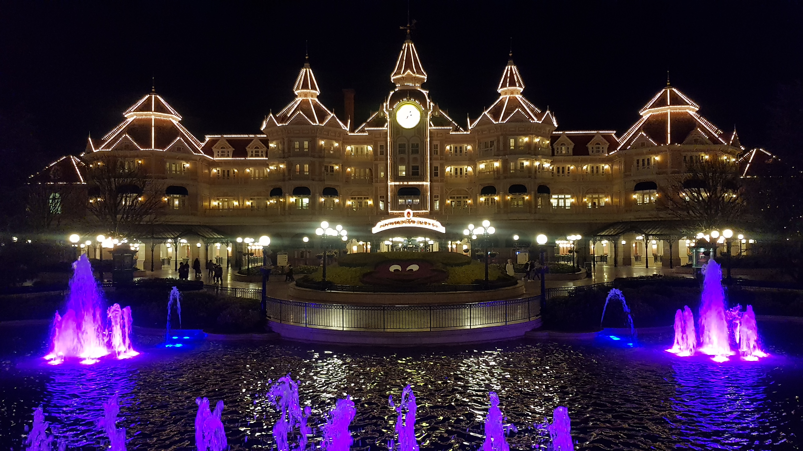
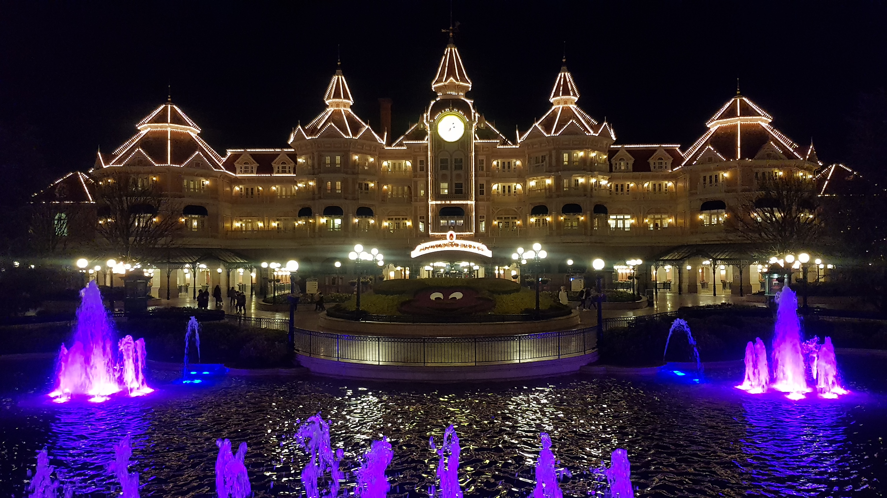
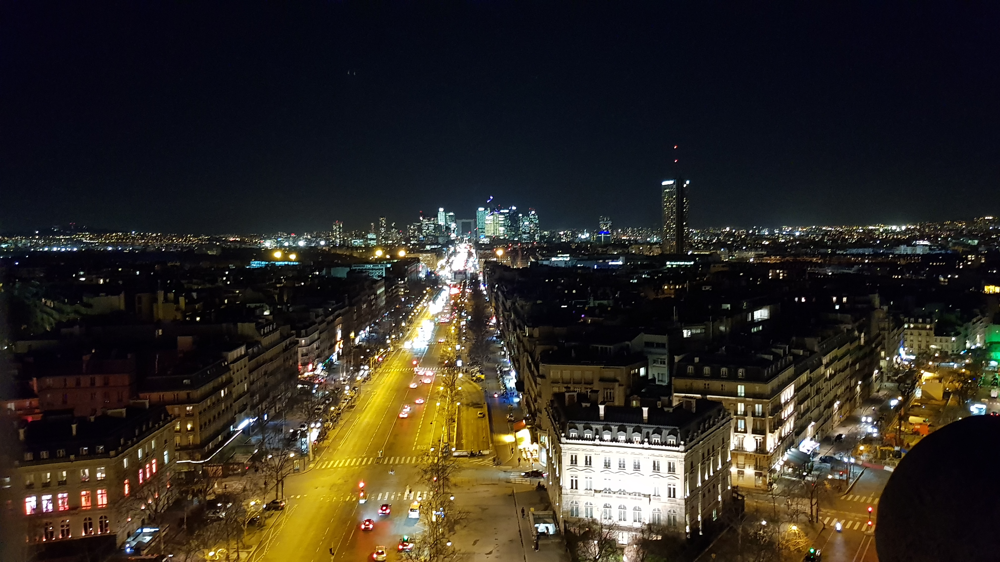
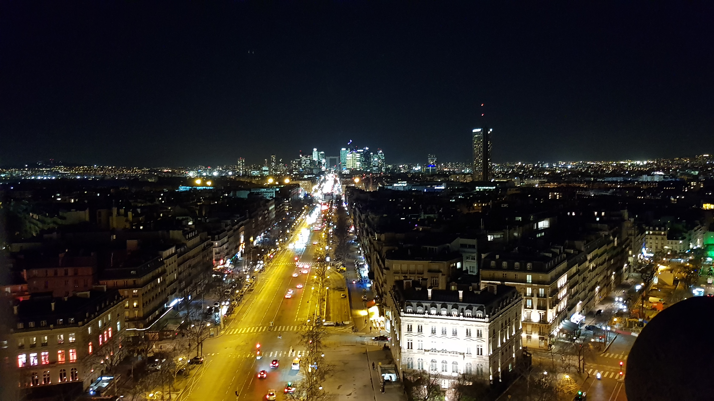
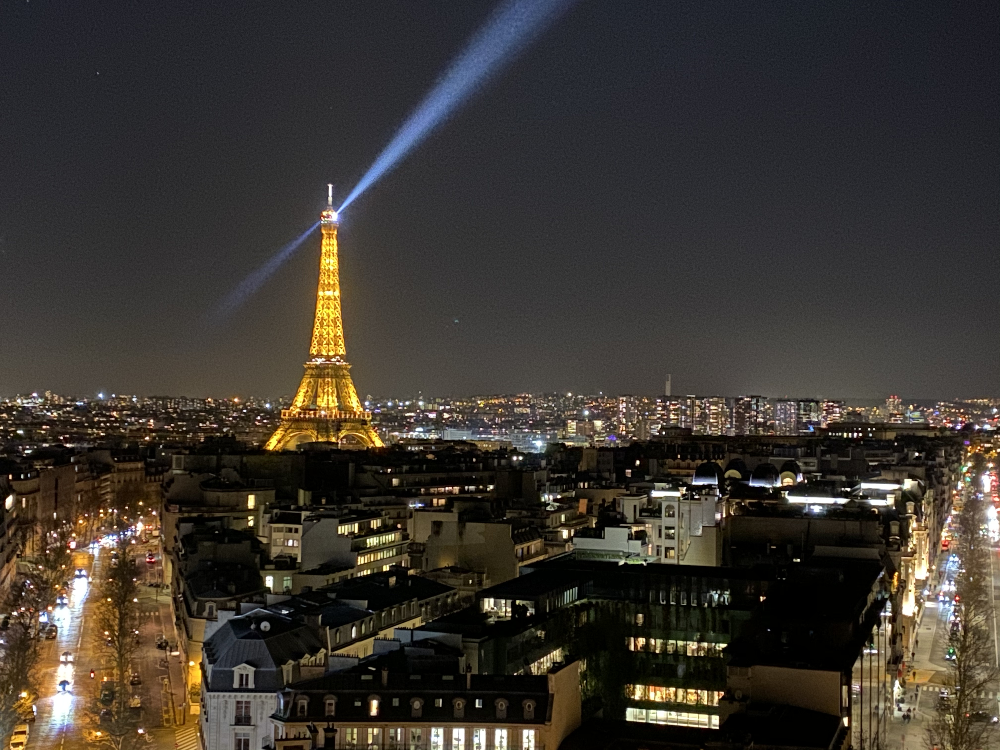
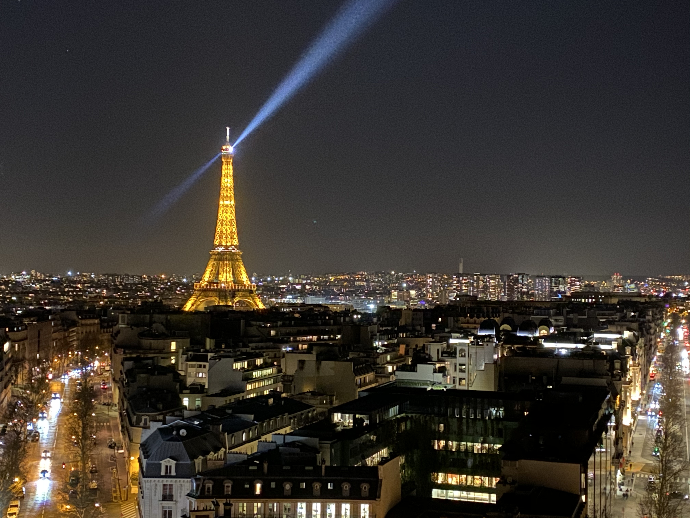

| Дубай - Рай в Ориента |
Ден 1. Полет София-Дубай Директен полет до Дубай. Кацане на летище Дубай. Трансфер до хотела. Настаняване. Нощувка. Ден 2. Дубай Закуска. Свободно време или възможност да се включите в целодневната ни екскурзия на Дубай, която включва посещение на Малката
Венеция на Дубай - Medinat Jumeirah и посещение на най-новата атракция на Дубай - The Frame. Вечерта ще имате възможност за разходка до The View, от където ще може да видите как изглежда града през нощта. Нощувка. Ден 3. Дубай Закуска.
Свободно време или възможност да се включите в целодневната ни екскурзия, която включва посещение на Burj Khalifa, най-високата сграда в света, от където ще може да се насладите на една уникална гледка. След това ще може да се включите
в екскурзията ни до Dubai Aquarium And Underwater Zoo в Dubai Mall. Вечерта ще се разходим до "Танцуващите фонтани". Нощувка. Ден 4. Дубай Закуска. Свободно време за плаж или посещение на аквапарк Wild Wadi Waterpark. Нощувка. Ден
5. Дубай Закуска. Свободно време за плаж или възможност да се включите в целодневната ни екскурзия до градината на чудесата - Miracle Garden и до градината на пеперудите Butterfly Garden - първият и единствен музей в света, посветен
на пеперудите. Вечерта ще може да се насладите на вечерен круиз Dubai Marina - арабски кораб галера с вечеря. Нощувка. Ден 6. Дубай Закуска. Свободно време за плаж или възможност за посещение на аквапарк Atlantis Waterpark. Нощувка.
Ден 7. Дубай Закуска. Свободно време за плаж или възможност за сутрешна разходка с яхта. Вечерта ще имате възможност да се включите в една изключително различна екскурзия - Сафари с джипове в пустинята на Дубай, яздене на камили, вечеря
с ориенталска шоу програма. Нощувка. Ден 8. Дубай Закуска. Свободно време за плаж или възможност за посещение на Legoland. Нощувка. Ден 9. Дубай Закуска. Свободно време за плаж или възможност да се включите в целодневната ни екскурзия
до Абу Даби. Нощувка. Ден 10. Дубай Закуска. Свободно време за плаж или възможност да се включите в сутрешна разходка до Global Village - разходка сред най-прочутите световни забележителности. Нощувка. Ден 11. Полет Дубай-София Закуска.
Освобождаване на хотела. Трансфер до летище Дубай за полет до България. Кацане на летище София.
|


|
| Лято в Атлантическия Рай - Канарски острови |
Ден 1. Полет София-Тенерифе Директен чартърен полет от София до Тенерифе. Кацане на летище Тенерифе. Трансфер до хотела. Вечеря. Нощувка. Ден 2. Тенерифе - Пуерто де ла Крус Закуска. Разходка до Пуерто де ла Крус - един от основните туристически курорти
на Канарските острови. Ще започнем с разходка из града и след това по желание може да отидете на плажа Лаго Мартианез или да се разходите още из града. Прибиране в хотела. Вечеря. Нощувка. Ден 3. Национален парк "Тейде" Закуска. Свободно
време за плаж или туристическа програма по желание. Вечеря. Нощувка. По желание: екскурзия до национален парк "Тейде" - една от най-големите геоложки забележителности в света.Там ще имате свободно време, за да се насладите на един
от най-впечатляващите вулканични пейзажи. Ще продължим към скалните образувания „Рокес де Гарсия“ и наблюдателната площадка в долината Уканка. Ден 4. Лоро парк Закуска. Свободно време за плаж или туристическа програма по желание. Вечеря.
Нощувка. По желание: посещение на Лоро парка - оценен като най-добрия зоопарк в света. Това е едно от най-екзотичните места на остров Тенерифе. Ще имате възможността да се разходите през ботаническа градина, разположена на 135 000
кв. м, да видите горили, леопарди, тигри, черни пантери, крокодили, пингвини, розово фламинго и много други морски и сухоземни обитатели. „Планетата на пингвините” (най-големият пингвинариум в света) е една от атракциите на парка,
а в аквариума освен да се порадвате на многобройните му обитатели, ще можете да минете и под тунела на акулите. Различните шоу спектакли с папагали, делфини, тюлени и косатки ще допълнят приятните ви емоции и изживявания в парка. Привечер
автобусът ще ви върне в хотела. Ден 5. Сиам парк Закуска. Свободно време за плаж или туристическа програма по желание. Вечеря. Нощувка. По желание: посещение на Сиам парк - най-големият воден парк в Европа. Идеален е за възрастните,
които търсят вълнуващите усещания на увеселителния парк и за сърфистите, които могат да използват най-големия в света басейн с изкуствени вълни. Също има много други атракции за цялото семейство. Привечер автобусът ще ви върне в хотела.
Ден 6. Свободно време за плаж или туристическа програма по желание. Вечеря. Нощувка. По желание: посещение на Санта Круз де Тенерифе - столицата на Тенерифе. Градският център на Санта Круз де Тенерифе е много приятно място за разходка
не само за туристите, но и за местните жители. Чистотата и красивата архитектура се съчетават перфектно с екзотичната растителност. Най-голям и известен е паркът Гарсия Санабрия, който предлага пищна зеленина и сенчести пейки за почивка.
Сред най-известните места за разходка е улица Рамбла дел Генерал Франко. Това е голяма улица, която разполага с широка и сенчеста алея за пешеходци между двете платна. В близост до града се намира и един от най-големите плажове на
острова - Playa de las Teresitas, където може да се насладите на гледка, която включва едновременно планина и море. Ден 7. Тенерифе-Гран Канария Закуска. Освобождаване на хотелските стаи. Трансфер до ферибота за Гран Канария. Пристигане
в Гран Канария. Свободно време за плаж или разходка из Лас Палмас де Гран Канария. Вечеря. Нощувка. Ден 8. Маспаломас Закуска. Свободно време за плаж или туристическа програма по желание. Вечеря. Нощувка. По желание: посещение на Маспаломас
- истинският рай за туристи, който предлага огромно разнообразие от хотели и ресторанти, най- голямото голф игрище на острова и обширни защитени територии, на които се простират километри пясъчни дюни, напомнящи на пустинята Сахара.
След Маспаломас ще имате възможност да посетите природен парк Roque Nublo - защитена територия от вулканични скали с височина до 80 метра - чудесна възможност не само за любителите на скалното катерене, но и за разходки покрай спиращи
дъха гледки. Привечер автобусът ще ви върне в хотела. Ден 9. Гран Канария-Фуертевентура Закуска. Освобождаване на хотелските стаи. Трансфер до ферибота за Фуертевентура. Пристигане във Фуертевентура. Свободно време за плаж или разходка
из Пуерто де Росарио. Вечеря. Нощувка. Ден 10. Фуертевентура-Тенерифе Закуска. Освобождаване на хотелските стаи. Трансфер до ферибота за Тенерифе. Пристигане в Тенерифе. Трансфер до летище Тенерифе за полет до България. Кацане на летище
София.
|

|
 

 

 
